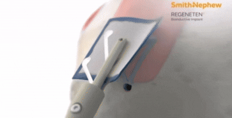

I am finishing my finance degree at the University of Utah this May. My background is in B2B outbound sales and I grew up around medicine and the OR with my father, a fellowship-trained orthopedic surgeon here in Salt Lake City. I always knew this world was for me. I have spent my career building the skills to be a genuine resource in it.
A scaffold made from highly purified type I collagen fibers derived from bovine Achilles tendon. About the size of a postage stamp. Placed on the bursal surface of the rotator cuff, it is resorbed and replaced by new tendon-like tissue within 6 months. REGENETEN is not a patch and it is not a graft.

I grew up in the OR knowing this world was always for me. I have the sales results that show I am not afraid of volume or grind. I have the background to walk into any OR in this territory and speak the language. REGENETEN is a product I can get behind completely.